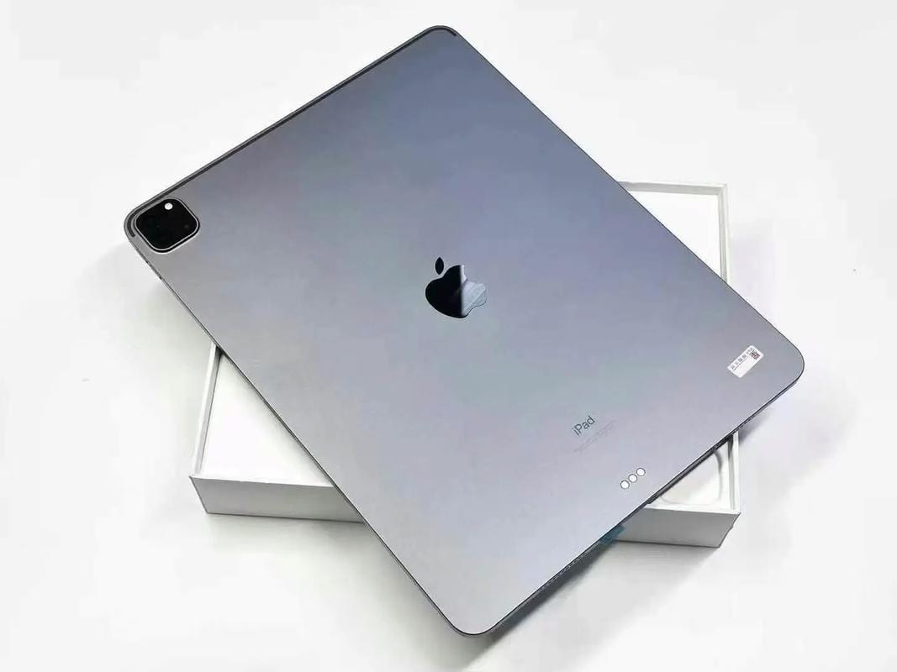

苹果 iPad Pro 12.9 英寸（2015）

12.9 英寸大屏加 Apple Pencil，开启平板生产力时代。
客观评测
iPad Pro 12.9 英寸搭载 A9X 处理器与 4GB 内存，单核性能匹敌同期轻薄本，可流畅剪辑多轨 4K 视频。12.9 英寸 2732×2048 Retina 屏幕支持分屏多任务与全尺寸虚拟键盘，四扬声器外放效果出众。后置 800 万像素摄像头成像中规中矩，38.5Wh 电池实测约 10 小时混合使用。6.9mm 机身做工精致，但 713g 的裸机重量加上键盘后与轻薄本相当，便携性有所牺牲。
主观点评
第一次在 12.9 英寸屏幕上用 Apple Pencil 书写，笔尖与玻璃接触几乎没有延迟，那一刻突然理解了下一块屏幕的含义。它不再只是内容消费设备，而是能画插画、写笔记、改方案的创作工具。四扬声器看大片的沉浸感令人上瘾。当然它贵、它重，但对设计师和学生而言，它把 iPad 不能干活的偏见彻底击碎，是平板走向生产力的里程碑。
优点与不足
- A9X 性能匹敌轻薄本，剪辑修图流畅
- 12.9 英寸大屏色彩与亮度表现出色
- Apple Pencil 与 Smart Keyboard 生产力出众
- 裸机 713g，加键盘后接近轻薄本重量
- 32GB 起步存储偏小，配件另购价格不菲
参数规格
| 屏幕 | 12.9 英寸 2732×2048 Retina，264ppi |
|---|---|
| 处理器 | 苹果 A9X 双核 2.26GHz |
| 内存 | 4GB RAM |
| 存储 | 32GB（另有 128GB） |
| 电池 | 38.5Wh，约 10 小时续航 |
| 摄像头 | 后置 800 万＋前置 120 万像素 |
| 系统 | iOS 9（可升级至 iPadOS 16） |
| 尺寸重量 | 305.7×220.6×6.9mm，约 713g |
| 音频 | 四扬声器立体声系统 |
| 配件 | Apple Pencil、Smart Keyboard |